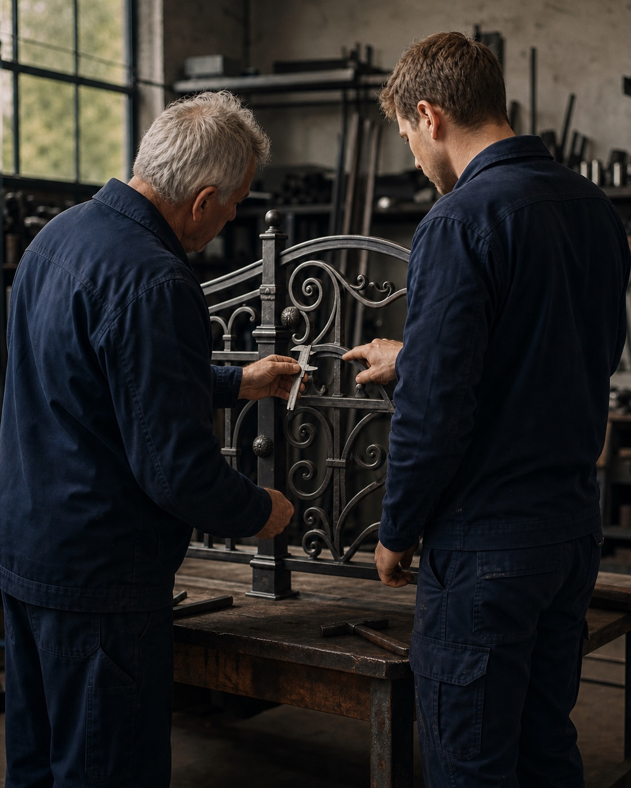
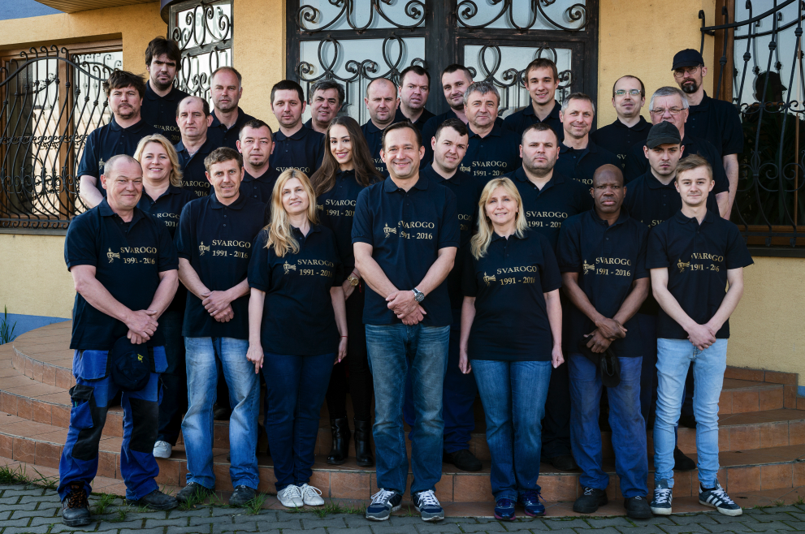

Rodinná firma od roku 1991
Kovové riešenia
na mieru.
Navrhujeme a vyrábame oplotenia, brány, zábradlia, pergoly, nábytok a kovové doplnky. Pre rodinné domy, firmy aj architektov.
Od prvého návrhu cez zameranie a povrchovú úpravu až po odbornú montáž — celé dielo riešite s jedným skúseným tímom.
30+rokov skúseností
1 tímod návrhu po montáž
SK · ATrealizácie doma aj v zahraničí

Rodinné remeslo
Skúsenosti jednej generácie odovzdávame ďalšej.
Návrh•
Zameranie•
Výroba•
Povrchová úprava•
Montáž
Galéria realizácií
Vyberte si kategóriu.
Inšpirujte sa našou prácou.
Každý výrobok môže vzniknúť podľa vašej predstavy alebo ho navrhneme spolu. Fotografie pochádzajú z reálnych realizácií Svarogo.
Každý detail vyrábame pre konkrétny priestor.
Naša práca
Od rodinných domov
po známe stavby.
Za tri desaťročia sme pracovali na súkromných aj verejných projektoch, historických objektoch, hoteloch a moderných rezidenčných stavbách.
História
Z malej dielne
k stabilnej rodinnej firme.
Svarogo začínalo s jediným zamestnancom. Kvalita práce priniesla zahraničné zákazky, rast tímu aj nové výrobné priestory — bez toho, aby sa vytratil osobný prístup.
1991 — dnesBernolákovo · Slovensko

Rodina, remeselníci a kolegovia, ktorí stoja za realizáciami.
Naša cesta
Šesť momentov, ktoré formovali dnešné Svarogo.
- 1991
01 Začíname od nuly
Prvé zákazky vznikajú v malej dielni pri rodinnom dome.
- 1992
02 Talianske partnerstvo
Kvalita zreštaurovanej napoleonskej postele otvára dlhoročnú spoluprácu.
- 1995
03 Prvá výrobná hala
Rastúci tím a nové zákazky dostávajú väčší výrobný priestor.
- 1998
04 Vzniká Kovbyt
Firma rozširuje výrobu o ďalšiu halu Svarogo – Kovbyt.
- 2005
05 Predajňa a showroom
Pribúdajú výstavné, predajné a administratívne priestory.
- Dnes
06 Remeslo pokračuje
Rodinný tím tvorí riešenia na mieru doma aj v zahraničí.
Prečo Svarogo?
Firma nesie meno slovanského patróna kováčov — Svaroga, ktorý podľa tradície vedel kovať meč aj pluh a chránil pred zlými mocnosťami.
Kontakt
Máte predstavu?
Poďme ju vyrobiť.
Napíšte nám základné informácie o projekte. Ak máte rozmery, fotografiu priestoru alebo náčrt, spomeňte ich v správe.